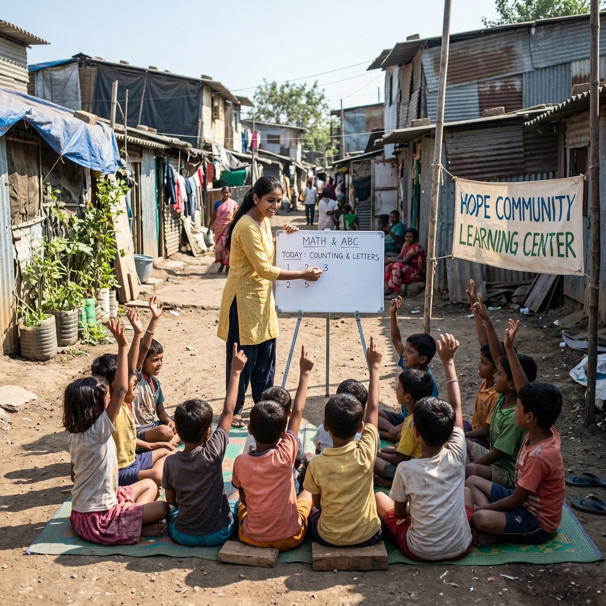
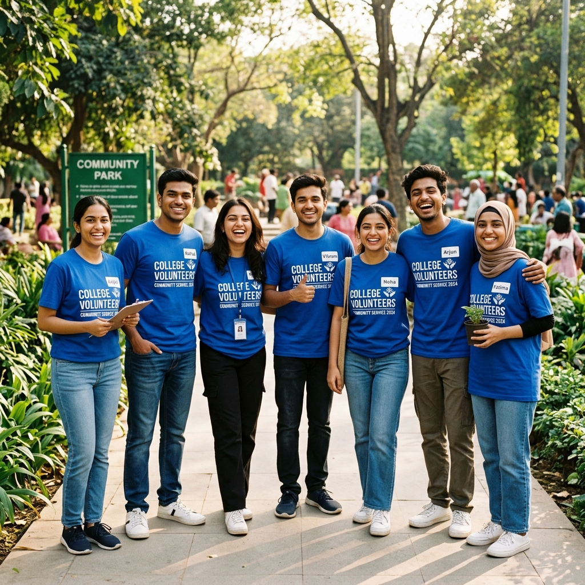
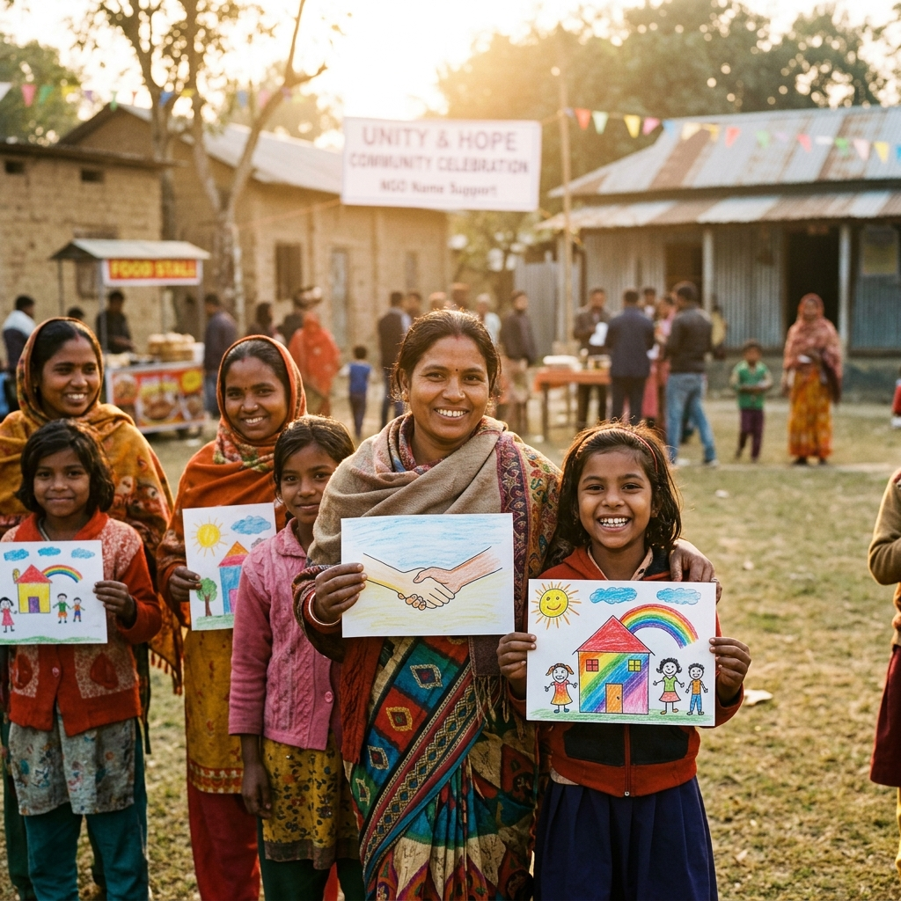
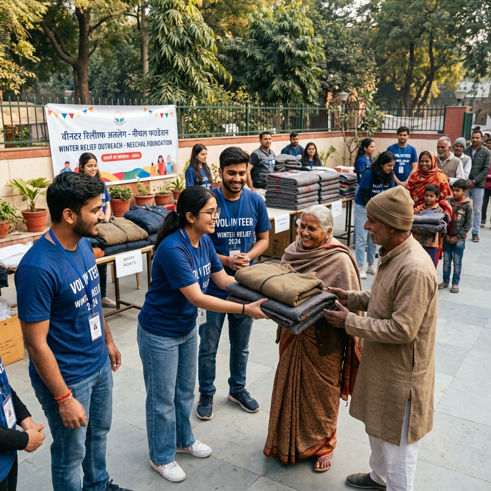
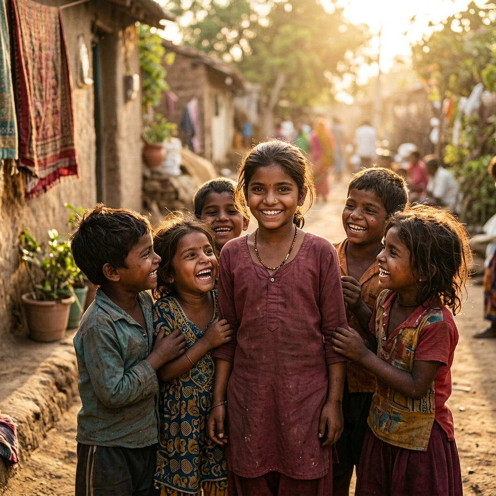

Every statistical parameter represents an underprivileged family supported, a student trained, or a smile created by our volunteer chapters.
Lives Impacted
Families supported across slums and rural hubs.
Student Volunteers
Empowering the next generation of social leaders.
Cities Reached
Expanding our grassroots footprint across India.
Meals Distributed
Freshly prepared nutritional meals given to those in need.
Filter through our campaigns to view chronological photo summaries of field events, food relief operations, and educational drives.







